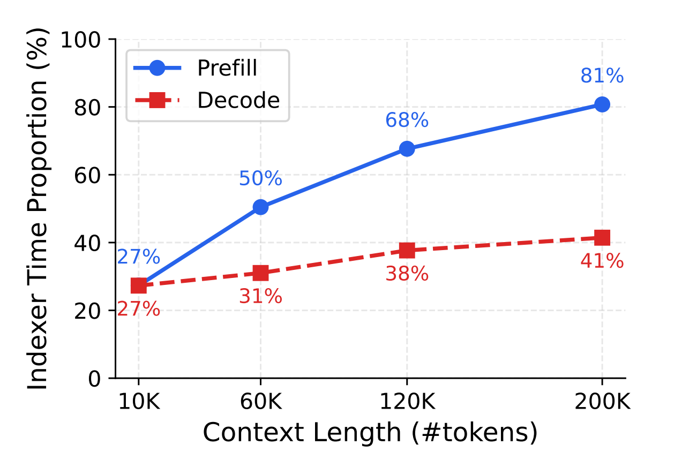
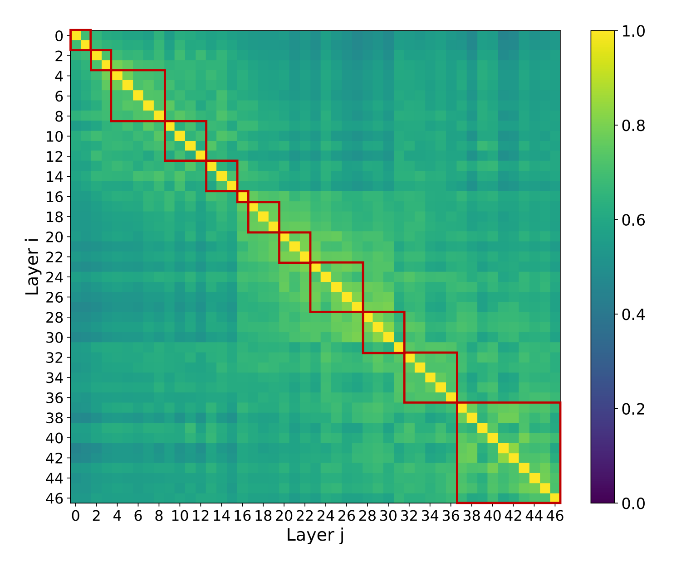
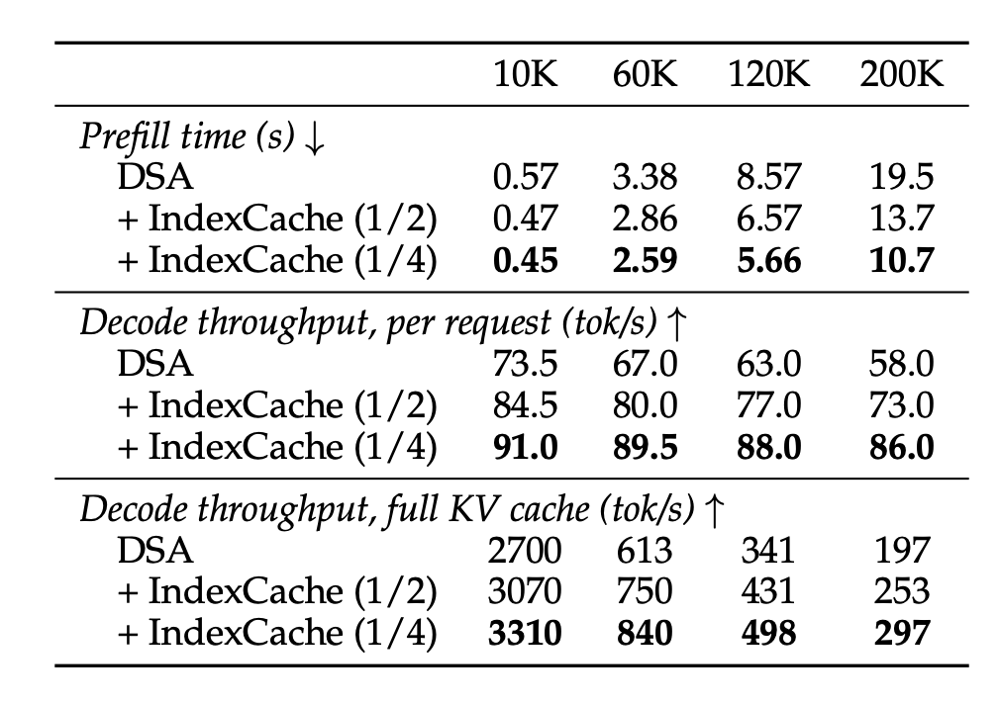

POSTS
IndexCache：DeepSeek 稀疏注意力中的跨层索引复用
By ZhongsJie
- 12 minutes read - 5812 words
技术背景#
MLA 已经解决了 KV Cache 存储问题#
DeepSeek-V2 提出的 MLA（Multi-head Latent Attention） 将 KV Cache 压缩到了极低的水平：
- 每 token 仅缓存 576 个元素（512 维压缩隐向量 + 64 维 RoPE 分量）
- 相当于 MHA 的 1.76%
- 128K 上下文下，FP8 KV Cache 仅需 8.72 GB（对比 Llama-70B 的 343 GB）
MLA 的压缩技巧在于：K 和 V 共享一个低秩隐向量 $c_t^{KV} \in \mathbb{R}^{512}$，推理时通过矩阵吸收技巧避免显式恢复高维 K/V。但是，MLA 仍然是全注意力——每个 query token 仍然要计算与所有历史 token 的注意力分数。当上下文长度增长到 128K 以上时，注意力计算量本身成为新瓶颈。
从全注意力到稀疏注意力#
DeepSeek-V3.2 引入的 DSA（DeepSeek Sparse Attention） 直接解决计算瓶颈：不再计算所有 token 的注意力，而是只选择 Top-K 个最重要的历史 token。闪电索引器 (Lightning Indexer） 是一个轻量级的注意力模块，为每个 query 快速计算与所有 key 的粗粒度相关性分数，然后通过 Top-K Selector 选出 top-k 个最相关的 token 索引。
细粒度 token 选择机制仅检索与 top-$k$ 索引分数对应的键值条目 $\{c_s\}$，通过在查询 token $h_t$ 与稀疏选择出的键值条目 $\{c_s\}$ 之间应用注意力机制，计算注意力输出 $u_t$：
$$ u_t = \mathrm{Attn}\left( h_t, \left\{ c_s \mid I_{t,s} \in \mathrm{Top}\text{-}k(I_{t,:}) \right\} \right) $$但这里引入了一个新问题：索引器仍需要对所有 $L$ 个 token 做一次完整的注意力计算，且每步都要重新选择 Top-K token。

- 在 30B 参数的 DSA 模型上，索引器（Lightning Indexer）的时间占比随上下文长度的变化。
在 200K 上下文长度下，预填充阶段有高达 81% 的时间花在索引器上！这意味着，尽管核心注意力已经被稀疏化了，但索引器的 $O(L^2)$ 计算反而成了新的瓶颈。上下文越长，索引器的瓶颈越突出。
- 这就是 IndexCache 要解决的问题：能否在不显著损失质量的前提下，大幅减少索引器的计算量？
跨层索引的冗余#
相邻层的 top‑k 选择高度相似（相邻层 overlap 在 70%–100%），也就是说"每层都重新算一遍 indexer"其实高度冗余。

这张热力图传递了几个重要信息：
- 对角线附近一片亮黄：相邻层的索引相似度非常高，通常在 70% 以上，很多甚至接近 100%。这意味着第 $\ell$ 层和第 $\ell+1$ 层的索引器，费了同样的计算量，却选出了几乎一模一样的 token 集合。
- 存在明显的块状结构：相似度不是均匀衰减的，而是形成了清晰的"块"——同一个块内的层高度相似，不同块之间的差异较大。这暗示了一种自然的分组结构。
- 浅层和深层的差异：模型的前几层和后几层内部相似度更高（块更大），中间层的块相对更小。
这个发现的直觉解释是：在深度神经网络中，相邻层的表示（representation）变化通常是平滑的，类似残差网络中的"小步更新"。因此，相邻层的 query 和 key 的分布差异很小，导致它们选出的最相关 token 高度一致。
F/S 分层 + 跨层复用索引#
概述。 IndexCache 通过将 $N$ 层划分为两种角色来修改 DSA，这种划分被编码为一个二进制模式字符串：
$$ \mathbf{c}=c_1c_2\cdots c_N,\quad c_\ell \in \{\mathrm{F}, \mathrm{S}\} $$- F（Full）：该层保留自己的 indexer，在所有之前的 token 上重新计算 $\mathcal{T}^{(\ell)}_t$，并在选中的子集上执行稀疏核心注意力，与标准 DSA 完全相同。
- S（Shared）：该层没有 indexer。它从最近的前置 F 层继承索引集合，即 $\mathcal{T}^{(\ell)}_t \leftarrow \mathcal{T}^{f(\ell)}_t$，其中 $f(\ell)=\max\{j<\ell:c_j=\mathrm{F}\}$，然后直接使用这些继承的索引执行稀疏核心注意力。
第一层始终为 F，用于生成初始索引。在推理阶段，S 层只需跳过 indexer 的前向计算，并复用其前驱层缓存的索引张量。假设模型有 48 层，如果采用 1/4 的保留率（keep ratio），则只有 12 层是 Full 层，剩下 36 层是 Shared 层。这意味着索引器的计算量直接减少到原来的 1/4。实现上并没有修改原始 Attention 计算逻辑，每层 Forward 过程中唯一的变化，仅仅是增加一个条件分支，用于决定是运行 indexer，还是复制缓存索引。
关键设计问题是如何选择模式 $\mathbf{c}$。如果大多数层都可以安全地共享索引，那么总 indexer 成本中的很大一部分 $O(NL^2)$ 就可以被消除，而核心注意力的计算复杂度 $O(NLk)$ 则保持不变。
- Training-free IndexCache，它通过在已建立的 DSA 模型上进行贪心搜索来确定 $\mathbf{c}$，不需要任何额外训练，在 1/2 保留率下效果几乎无损；
- Training-aware IndexCache，它通过多层蒸馏损失联合优化用于跨层共享的 indexer 参数，用于提升在 1/4 保留率场景下的质量。
Training-aware IndexCache#
无需训练的 IndexCache 不需要更新权重，但它的局限在于：每个 indexer 最初都只被训练用于服务其所在的单层。当从头训练 DSA 模型，或继续进行预训练时，同时显式地训练每个保留下来的 indexer，使其能够同时服务多个层。
从单层蒸馏到多层蒸馏。 在标准 DSA 训练中，第 $\ell$ 层的每个 indexer 都会通过 KL 散度，相对于其自身层的聚合注意力分布 $p_t^{(\ell)}$ 进行蒸馏：
$$ \mathcal{L}^{\ell}=\sum_t D_{\mathrm{KL}}\left(p_t^{(\ell)} \parallel q_t^{(\ell)}\right) $$将其推广为一个多层目标。设第 $\ell$ 层是一个保留下来的 F 层，并设第 $\ell+1,\ldots,\ell+m$ 层是后续的 S 层，它们将复用该层的索引集合 $\mathcal{T}^{(\ell)}$。多层蒸馏损失为：
$$ \mathcal{L}^{\ell}_{\mathrm{multi}} = \sum_{j=0}^{m} \frac{1}{m+1} \sum_t D_{\mathrm{KL}} \left( p_t^{(\ell+j)} \parallel q_t^{(\ell)} \right) $$直观地看，这会鼓励 indexer 预测一个 top-$k$ 集合，使其对该 indexer 所服务的所有层都有联合价值，而不是仅仅过拟合到第 $\ell$ 层本身。
与针对平均分布进行蒸馏的梯度等价性。 一个自然的担忧是，优化多个 KL 项之和是否会引入意外的相互作用。我们证明，多层损失具有一个清晰的解释：它产生的梯度与针对单个平均目标进行蒸馏时完全相同。如果只最小化 Full 层自身的注意力分布变化，Full 层的索引器会倾向于"自私地"优化自己的表现，而忽略 Shared 层的需求。多层蒸馏让索引器学会兼顾所有被服务层。

- 上下文越长，加速比越大。上下文越长，索引器的 $O(L^2)$ 计算在总计算中的占比越大，削减索引器带来的收益也越大。
和 KV Cache 的关系#
在标准的自回归解码中，每一层都会维护一个 KV Cache（缓存所有已生成 token 的 key 和 value）。IndexCache 在此基础上额外缓存一份"索引 Cache"——即 Full 层选出的 top-k token 位置索引。vLLM 实现了 paged indexer K cache，并用一个共享的瞬态 top-k buffer 连接 indexer 与 sparse MLA。
两种 Cache 的生命周期不同：
- KV Cache：随着每个新 token 的生成不断增长。
- Index Cache：在 Full 层计算后写入，在后续的 Shared 层读取使用，直到遇到下一个 Full 层才更新。
在 Prefill 阶段，所有层按顺序处理，Index Cache 自然地被逐层传递。在 Decode 阶段，由于每次只处理一个新 token，Full 层需要为这个新 token 重新计算索引（因为新 token 与历史 token 的相关性分布可能不同），但 Shared 层仍可复用。
源码分析#
以下分析基于 vLLM
main@f2069b005b815e8a1b44381712dc951157c42ad4。需要先区分三个对象：DeepseekV32IndexerCache保存每层自己的历史 Indexer K；topk_indices_buffer保存当前 token 的 top-k 位置；IndexCache 策略通过让 Shared 层不覆盖该 buffer，实现跨层索引复用。
模型识别与缓存配置#
class DeepseekV32ForCausalLM(VerifyAndUpdateConfig):
@classmethod
def verify_and_update_config(cls, vllm_config: "VllmConfig") -> None:
hf_config = vllm_config.model_config.hf_config
# index_topk 是当前实现识别 DeepSeek V3.2 DSA 的关键配置字段。
is_v32 = hasattr(hf_config, "index_topk")
assert is_v32
cache_config = vllm_config.cache_config
if cache_config.cache_dtype == "bfloat16":
# 将显式 BF16 改成 auto，后续由 sparse MLA 后端确定实际布局。
cache_config.cache_dtype = "auto"
logger.info("Using bfloat16 kv-cache for DeepSeekV3.2")
DeepseekV32ForCausalLM位于模型配置适配层，不是实际推理模型类。index_topk既用于识别 V3.2 DSA，也决定每个 query 最终保留的历史位置数量。- 这里修改的是主 attention cache 的配置入口，与后文的 Indexer K cache 不是同一个 cache。
DeepseekV32IndexerCache：Indexer 的分页 K cache 声明#
class DeepseekV32IndexerCache(torch.nn.Module, AttentionLayerBase):
def __init__(self, head_dim, dtype, prefix, cache_config):
super().__init__()
# 初始化时只是占位；真实分页 cache 由 vLLM KV cache 管理器分配并绑定。
self.kv_cache = torch.tensor([])
self.head_dim = head_dim
self.prefix = prefix
self.cache_config = cache_config
self.dtype = dtype
# 注册为 attention layer，使调度器能够为它建立 cache 和 metadata。
compilation_config = get_current_vllm_config().compilation_config
compilation_config.static_forward_context[prefix] = self
def get_kv_cache_spec(self, vllm_config: VllmConfig) -> KVCacheSpec:
return MLAAttentionSpec(
block_size=self.cache_config.block_size,
num_kv_heads=1, # 64 个 Indexer Query heads 共享一份历史 K。
head_size=self.head_dim,
dtype=self.dtype,
)
def get_attn_backend(self) -> AttentionBackend:
# 后端负责物理布局、slot mapping、block table 和 prefill/decode metadata。
return DeepseekV32IndexerBackend
- 类名中虽然有
Cache，但它不是跨层 IndexCache 策略本身。 - 它是一个
AttentionLayerBase，向 vLLM 声明"该 Indexer 层需要一份分页 K cache"。 - 这里只有一个向量，没有普通 attention 中相互独立的 K/V 两个向量。
num_kv_heads=1表示 Indexer 使用 MQA 形式：多个 Query heads 共享一个 K。- 每个保留 Indexer 的 transformer 层拥有自己的
DeepseekV32IndexerCache；它不在 transformer 层之间共享。
Indexer K cache 的物理布局#
class DeepseekV32IndexerBackend(AttentionBackend):
@staticmethod
def get_name() -> str:
return "DEEPSEEK_V32_INDEXER"
@staticmethod
def get_kv_cache_shape(
num_blocks,
block_size,
num_kv_heads,
head_size,
cache_dtype_str="auto",
):
assert num_kv_heads == 1
# 每个分页位置只保存一份共享 K，不额外增加 V 维度。
return (num_blocks, block_size, head_size)
- 当前 V3.2 Indexer 的逻辑 K 维度为 128。
- FP8 cache 为每个 token 保存 128 bytes K 和一个 4 bytes scale，因此构造 cache spec 时使用
head_dim=132、dtype=torch.uint8。 - 该 cache 随序列增长，用于下一 token 的全历史检索；它的生命周期类似 KV cache，而不是只在相邻层之间短暂存在。
Indexer 结构#
class Indexer(nn.Module):
def __init__(self, vllm_config, config, hidden_size, q_lora_rank,
quant_config, cache_config, topk_indices_buffer, prefix,
is_inplace_rope=False):
super().__init__()
self.topk_tokens = config.index_topk
self.n_head = config.index_n_heads # 通常为 64 个 Indexer Query heads。
self.head_dim = config.index_head_dim # 通常为 128。
self.rope_dim = config.qk_rope_head_dim # RoPE 子空间通常为 64。
# 从主 MLA 的 query latent 生成多头 Indexer Query。
self.wq_b = ReplicatedLinear(
q_lora_rank,
self.head_dim * self.n_head,
bias=False,
quant_config=quant_config,
prefix=f"{prefix}.wq_b",
)
# 一次 GEMM 同时生成共享 K 和各 Query head 的聚合权重。
# Fused wk + weights_proj: single GEMM producing [head_dim + n_head].
self.wk_weights_proj = MergedColumnParallelLinear(
hidden_size,
[self.head_dim, self.n_head],
bias=False,
quant_config=None,
disable_tp=True,
prefix=f"{prefix}.wk_weights_proj",
)
self.k_norm = LayerNorm(self.head_dim, eps=1e-6)
self.topk_indices_buffer = topk_indices_buffer
index_n_heads/index_head_dim属于 Lightning Indexer，不等于主 MLA attention 的 head 配置。weights_proj不是 Value 投影，它给多个 Indexer Query heads 的相关性分数提供聚合权重。wk和weights_proj被融合为一个 GEMM，输出[head_dim + n_head]，减少一次投影开销。disable_tp=True表示 indexer 投影在 tensor parallel 上复制，不切分。
Indexer 随后创建自己的分页 K cache，并将它交给 SparseAttnIndexer：
# FP8 naive cache：128 bytes K + 4 bytes FP32 scale。
self.k_cache = DeepseekV32IndexerCache(
head_dim=self.head_dim + self.head_dim // self.quant_block_size * 4,
dtype=torch.uint8,
prefix=f"{prefix}.k_cache",
cache_config=cache_config,
)
self.indexer_op = SparseAttnIndexer(
self.k_cache, # 历史检索 K 的分页 cache。
self.quant_block_size,
self.scale_fmt,
self.topk_tokens,
self.head_dim,
self.max_model_len,
self.max_total_seq_len,
self.topk_indices_buffer, # 跨层共享的是这个 top-k 结果 buffer。
)
- DeepseekV32IndexerCache：保存本层所有历史 token 的 Indexer K
- SparseAttnIndexer：读取该 K cache，计算得分并写 topk_indices_buffer
Indexer 前向计算#
def forward(self, hidden_states, qr, positions, rotary_emb) -> torch.Tensor:
# qr 是主 MLA 产生的 query latent q_c。
q, _ = self.wq_b(qr)
q = q.view(-1, self.n_head, self.head_dim)
q_pe, q_nope = torch.split(
q,
[self.rope_dim, self.head_dim - self.rope_dim],
dim=-1,
)
# 一次融合投影得到共享 K 和每个 Query head 的权重。
kw, _ = self.wk_weights_proj(hidden_states)
k = kw[:, : self.head_dim]
weights = kw[:, self.head_dim :]
k = self.k_norm(k)
k_pe, k_nope = torch.split(
k,
[self.rope_dim, self.head_dim - self.rope_dim],
dim=-1,
)
# 只旋转 PE 子空间；K 增加一个共享 KV-head 维度以匹配 MQA。
q_pe, k_pe = rotary_emb(positions, q_pe, k_pe.unsqueeze(1))
q = torch.cat([q_pe, q_nope], dim=-1)
k = torch.cat([k_pe.squeeze(-2), k_nope], dim=-1)
# Q 在 Python 层量化；K 的量化与 paged-cache 写入在底层融合完成。
q_fp8, q_scale = per_token_group_quant_fp8(
q.view(-1, self.head_dim),
self.quant_block_size,
column_major_scales=False,
use_ue8m0=True,
)
q_fp8 = q_fp8.view(-1, self.n_head, self.head_dim)
q_scale = q_scale.view(-1, self.n_head, 1)
# 将 Q scale、点积缩放和多头归一化折叠进 weights。
weights = (
weights.unsqueeze(-1)
* q_scale
* self.softmax_scale
* self.n_head**-0.5
).squeeze(-1)
return self.indexer_op(hidden_states, q_fp8, k, weights)
qr是q_c，即主 MLA 的低秩 Query latent，不是最终完成主 attention 投影的 Q。- Q 和共享 K 都在相同的 RoPE 坐标系中进行检索打分。
- 返回值是共享
topk_indices_buffer，不是 attention 输出。
return self.indexer_op(...)#
return self.indexer_op(
hidden_states,
q_fp8, # 当前 token 的多头量化检索 Query。
k, # 当前 token 的共享检索 K，待量化并写入分页 cache。
weights, # 聚合多个 Query-head 分数的动态权重。
)
在 V3.2 路径中，该调用完成：
- 将当前 token 的共享 K 量化并写入本层
DeepseekV32IndexerCache。 - 根据 metadata 获取本层的 slot mapping、block table 和序列长度。
- 使用当前 Q 对该层的全部历史 Indexer K 计算 MQA logits。
- 使用
weights聚合多 Query heads 的检索分数。 - 对每个 query 执行 top-k。
- 将局部 token 位置写入模型级
topk_indices_buffer并返回该 buffer。
hidden_states 主要保留在统一 custom op 接口中，并用于 profiling/fake op 的形状与 token 数信息；实际相关性计算的核心输入是 q_fp8、分页 K cache 和 weights。
SparseAttnIndexer Custom Op#
@CustomOp.register("sparse_attn_indexer")
class SparseAttnIndexer(CustomOp):
def forward_cuda(self, hidden_states, q_quant, k, weights):
# V3.2 FP8 路径中 q_quant 是 Tensor，q_scale 已折叠进 weights。
q_values, q_scale = self._split_quantized_q(q_quant)
return torch.ops.vllm.sparse_attn_indexer(
hidden_states,
self.k_cache_prefix,
self.kv_cache,
q_values,
q_scale,
k,
weights,
self.quant_block_size,
self.scale_fmt,
self.topk_tokens,
self.head_dim,
self.max_model_len,
self.total_seq_lens,
self.topk_indices_buffer,
self.skip_k_cache_insert,
self.use_fp4_cache,
)
底层算子的共同前置逻辑：
attn_metadata = get_forward_context().attn_metadata
metadata = attn_metadata[k_cache_prefix]
slot_mapping = metadata.slot_mapping
if not skip_k_cache_insert:
# V3.2 在这里量化当前 K 并写入本层 Indexer paged cache。
ops.indexer_k_quant_and_cache(
k,
kv_cache,
slot_mapping,
quant_block_size,
scale_fmt,
)
# -1 用于标记当前 batch 尚未产生或无效的 top-k 位置。
topk_indices_buffer[: hidden_states.shape[0]] = -1
- Prefill：按 workspace/logits 显存预算切 chunk，gather 分页 K，计算
fp8_fp4_mqa_logits，然后调用top_k_per_row_prefill。 - Decode：直接对 paged K cache 调用 paged MQA logits，再使用 persistent top-k 或通用 decode top-k。
- speculative decode：必要时 pack 不规则 token 序列，完成 top-k 后再 unpack。
topk_indices_buffer是算子的可变输出参数，因此结果主要通过原地写入传递。
Indexer metadata#
@dataclass
class DeepseekV32IndexerMetadata:
seq_lens: torch.Tensor
max_seq_len: int
slot_mapping: torch.Tensor
num_decodes: int
num_decode_tokens: int
num_prefills: int
num_prefill_tokens: int
decode: DeepSeekV32IndexerDecodeMetadata | None = None
prefill: DeepseekV32IndexerPrefillMetadata | None = None
slot_mapping决定当前 token 的 K 写入分页 cache 的物理位置。- decode metadata 提供 block table、每个 query 可见的历史长度和 kernel 调度信息。
- prefill metadata 还包含 chunk 规划，避免一次生成完整的超大 logits 矩阵。
- 该 metadata 服务的是 Indexer K cache；主 sparse MLA 使用另一套 attention metadata。
IndexCache 配置：决定哪些层刷新 top-k#
index_topk_freq = getattr(config, "index_topk_freq", 1)
index_topk_pattern = getattr(config, "index_topk_pattern", None)
index_skip_topk_offset = getattr(config, "index_skip_topk_offset", 2)
if index_topk_pattern is None:
skip_topk = (
max(layer_id - index_skip_topk_offset + 1, 0) % index_topk_freq != 0
)
elif 0 <= layer_id < len(index_topk_pattern):
skip_topk = index_topk_pattern[layer_id] == "S"
index_topk_freq=1：每层都是 Full 层，每层都运行自己的 Indexer。index_topk_freq=N：按照 offset 和周期选择 Full 层，其余层为 Shared 层。index_topk_pattern：显式模式；字符S表示 Shared，其他位置按 Full 处理。index_skip_topk_offset：调整周期开始位置，避免最前面的层在没有 producer 的情况下读取未初始化索引。
创建 attention 层时，backbone Shared 层通常根本不构造 Indexer：
if self.is_v32 and (not skip_topk or is_mtp_layer):
self.indexer = Indexer(...)
else:
# Shared backbone 层没有自己的 Indexer，也没有自己的 Indexer K cache。
self.indexer = None
self.mla_attn = MultiHeadLatentAttentionWrapper(
...,
indexer=self.indexer,
topk_indices_buffer=topk_indices_buffer,
skip_topk=skip_topk,
)
因此不能说 Shared 层"复用了 Full 层的
DeepseekV32IndexerCache"。它复用的是 Full 层写入共享topk_indices_buffer的 top-k 结果。
模型级共享 topk_indices_buffer#
self.is_v32 = hasattr(config, "index_topk")
if self.is_v32:
topk_indices_buffer = torch.empty(
vllm_config.scheduler_config.max_num_batched_tokens,
config.index_topk,
dtype=torch.int32,
device=self.device,
)
else:
topk_indices_buffer = None
# 同一个 tensor 被传给所有 decoder layers。
self.layers = make_layers(
config.num_hidden_layers,
lambda prefix: DeepseekV2DecoderLayer(
vllm_config=vllm_config,
prefix=prefix,
topk_indices_buffer=topk_indices_buffer,
),
)
- buffer 形状为
[max_num_batched_tokens, index_topk]，dtype 为int32。 - 它按当前 forward batch 重复使用，不随完整历史长度线性增长。
- 它不是 paged cache，也不由 KV cache manager 管理。
- Full 层原地覆盖它；随后 Shared 层读取同一 tensor 中仍保留的索引。
Attention 中的 Full/Shared 分支#
# Full 层：运行 Indexer，更新本层 K cache，并刷新共享 top-k buffer。
if self.indexer and self.is_sparse and not self.skip_topk:
self.indexer(hidden_states, q_c, positions, self.indexer_rope_emb)
# Full 和 Shared 层都会运行 sparse MLA。
# Shared 层没有刷新 buffer，因此会消费最近前置 Full 层留下的 top-k。
attn_out = self.mla_attn(
q,
kv_c_normed,
k_pe,
output_shape=(hidden_states.shape[0], self.num_heads * self.v_head_dim),
)
这里没有发生 top-k tensor 的显式复制。跨层复用依赖：
- 所有层持有同一个
topk_indices_buffer。 - transformer 层按顺序执行。
- Full 层先写入。
- Shared 层不运行 Indexer，因此不会覆盖 buffer。
- sparse MLA 从该 buffer 获取候选位置，但仍使用本层自己的主 MLA cache 计算 attention。